Correctness and arousal jointly support learners at an impasse.
EmotiMath pairs each answer with fingertip EDA to move one problem between concrete, pictorial and abstract representations.
1 ETH Zürich 2 FernUni Schweiz 3 Singapore Management University
concreteness fading
Pizzas first, bars next, then the equation.
Concreteness fading [1], a proven scaffold, teaches a concept with relatable objects, moves to a visual diagram, and ends with symbolic notation [2].
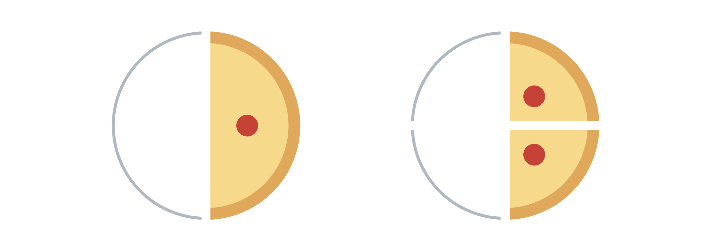
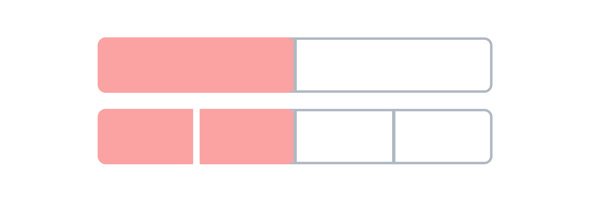
But does an AI tutor see more than the answer?
the problem
Traditional AI math tutors adapt to answers, not affective states.
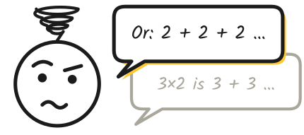
an answer-only AI tutor
After an invalid answer, the tutor tries to give another similar explanation.
our contribution
EmotiMath makes concreteness fading bidirectional and affect-aware.
Classic fading moves only from concrete to abstract. EmotiMath adds the reverse step and decides after each answer, combining correctness with arousal estimated from fingertip EDA.
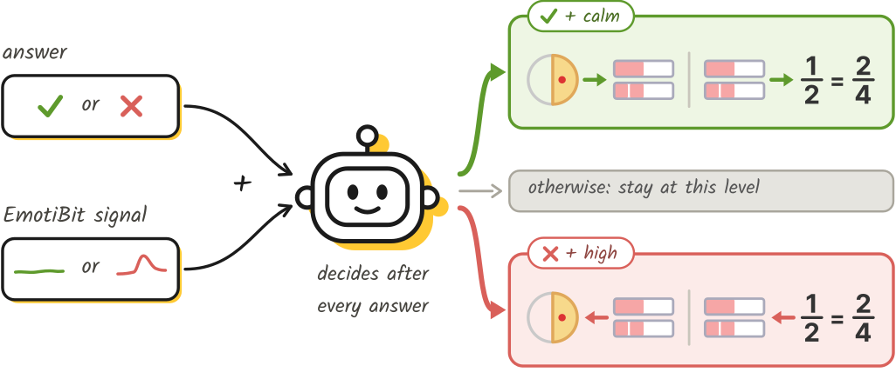
demo setup
Sit down and solve a few.
An iPad for you, a laptop for us, and a sensor in between.
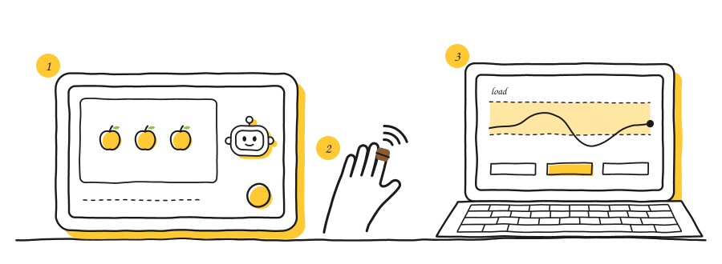
1 Tutor interface. Learners talk with the AI tutor “Buddy” on an iPad.
2 Wearable sensor. Users wear EmotiBit on one fingertip and let it record EDA signals.
3 Monitor display. It shows the estimated arousal and adaptation decision.
Rather not wear the sensor? We can play back a recorded session instead.
system pipeline
A calibrated baseline drives each per-answer adaptation.
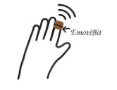
1.
Sense
EmotiBit records EDA signals at one fingertip.
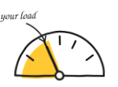
2.
Calibrate
A one-minute calibration sets the personalized baseline.
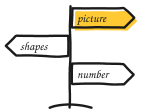
3.
Decide
Answers and signals together decide the next action.
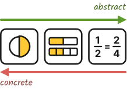
4.
Adapt
The same problem is shown one level more concrete or abstract.
Arousal model: a logistic regression on tonic EDA, trained on WESAD [3] and MAUS [4], reaches an offline AUC of 0.725 on MAUS; it has not yet been validated on EmotiBit.
decision rules
Correctness and arousal jointly set the next step.
A correct answer within 90 s blocks a step back; a step back cannot be undone for 20 s.
in action
It waits for the right moment.
A sample arousal trace through the tutor's real rule. The picture only changes when the learner finishes a turn: a right answer holds it, a miss under high arousal steps it back.
the learner's estimated arousal
0.25calmstep back at turn end
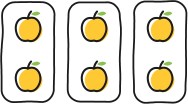
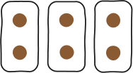
Still calm. It moves on as soon as this one is answered right.
future work
Validation, evaluation, personalization.
- Validate the arousal model on EmotiBitCollect labeled EmotiBit recordings and re-evaluate the model.
- Evaluate with learnersTest effectiveness and engagement with learners in a user study.
- Personalize the representationWhich representation suits which learner?
at a glance
Approach. Each answer is paired with fingertip EDA to move one problem between concrete, pictorial and abstract representations. Why. Correctness alone cannot decide when a learner needs more guidance. Next. Validate on EmotiBit recordings and test with learners.
Liked it? Vote for us!
UIST 2026 Student Innovation Contest · People’s Choice Award